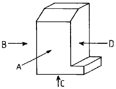
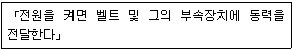
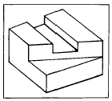
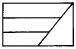
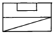
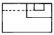
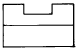

보석가공기능사 (2004-07-18 기출문제)
1과목: 보석재료
1. 용융 암석 물질인 마그마가 냉각하여 형성된 광물은?
- 수성암
- 화성암
- 변성암
- 퇴적암
(정답률: 알수없음)

2. 첨정석(尖晶石: spinel)에 관한 설명 중 맞는 것은?
- 다이아몬드나 석류석과 같이 등축정계에 속한다.
- 공작석과 같은 단사정계에 속한다.
- 강옥석과 같은 육방정계에 속한다.
- 루티일과 같은 정방정계에 속한다.
(정답률: 알수없음)
3. 크릴소베릴(chrysoberyl)에 속하는 보석은?
- 호안석
- 조이 사이트
- 칼세도니
- 캐츠아이
(정답률: 알수없음)
4. 보석연마 작업에서 산화크롬을 필요로 하는 이유는?
- 쪼개기 작업(클리빙)을 하기 위함
- 광내기 작업(폴리싱)을 하기 위함
- 다듬기 작업(불루팅)을 하기 위함
- 막대 붙이는 작업(돕핑)을 하기 위함
(정답률: 알수없음)
5. 합성보석의 제조에서 높은 온도와 압력하의 오토클레스브 내에서 열수용액으로부터 결정을 성장시키는 방법은?
- 열수합성법
- 화염용융법
- 플럭스 성장법
- 고체 반응법
(정답률: 알수없음)
6. 루비, 사파이어의 결정계는?
- 사방정계
- 단사정계
- 정방정계
- 육방정계
(정답률: 알수없음)
7. 세 개의 결정축의 길이가 같고 세 개의 결정축이 90°로 교차하는 것은?
- 1축성이다.
- 복굴절한다.
- 다색성이 있다.
- 등축정계이다.
(정답률: 알수없음)
8. 다음 보석 중 빛의 간섭에 의해서 특수효과가 나는 보석은?
- 서펜틴
- 진주
- 산호
- 호박
(정답률: 알수없음)
9. 다음 중 천연진주 평가에 있어 주된 요소가 아닌 것은?
- 색
- 광택
- 크기
- 진주층의 두께
(정답률: 알수없음)
10. 다음 더블릿(doublet)에 대한 설명 중 올바른 것은?
- 수정, 오팔, 옵시디언을 무색 접착제로 접합시킨 것
- 수정과 수정을 녹색 접착제로 접착시킨 것
- 유리와 가닛을 무색 접착제로 접합시킨 것
- 비취속에 녹색 제리를 넣고 비취만 접합시킨 것
(정답률: 알수없음)
11. 텀블러를 이용한 연마에서 연마제와 메디아 그리고 원석의 채워넣는 비율은 대략 어느 정도인가? (단, 연마제, 메디아, 원석의 순서임)
- 1:2:5
- 1:5:10
- 1:5:15
- 1:5:20
(정답률: 알수없음)
12. 광택제를 만들기 위한 산화 알루미늄의 성분이 아닌 것은?
- 린데(Linde A)
- 보트(Bort)
- 루비딕스(Ruby dix)
- 사파이어(Sapphire)분말
(정답률: 알수없음)
13. 다음 모조석에 관한 정의 중 옳은 것은?
- 천연보석의 색깔을 아름답게 하기 위하여 인공으로 착색한 보석을 모조석이라 총칭한다.
- 천연보석과 유사하나 천연과 다른 상품으로 주로 유리, 플라스틱 등으로 제조한다.
- 합성루비나 사파이어 등도 모조석이라 한다.
- 다이아몬드는 어떤 보석으로도 모조석을 만들 수 없다.
(정답률: 알수없음)
14. 다음 중 천연 해수 진주의 가장 중요한 산지는?
- 파나마
- 일본
- 베네주엘라
- 페르샤만
(정답률: 알수없음)
15. 다음 중 베르누이법 합성 사파이어의 특징이라 할 수 있는 내포물 모양은?
- 견사상의 직선 구조
- 지문상의 내포물
- 기포, 커브된 색대
- 직선적인 다각형 기포
(정답률: 알수없음)
16. 산호에 대한 설명 중 잘못된 것은?
- 염산에 반응한다.
- 연마시 유리광택이 난다.
- 주성분이 마그네슘과 철이다.
- 주요 산지는 지중해연안이다.
(정답률: 알수없음)
17. 시트 펠트 광판(sheet felt buffs)에 관한 설명 중 잘못된 것은?
- 뜨거운 물에 5∼10분 정도 담가두면 유연해진다.
- 찢어지기 쉽고 주름지기 쉽다.
- 2.5Cm 이상의 두께가 필요하다.
- 평면, 캐보션도 쉽게 광택을 낼 수 있다.
(정답률: 알수없음)
18. 광택 작업용 다이아몬드 파우더는?
- # 8,000 ~ 50,000
- # 2,000 ~ 10,000
- # 5,000 ~ 15,000
- # 3,000 ~ 20,000
(정답률: 알수없음)
19. 칼세도니의 변종들에 관한 설명 중 틀린 것은?
- 사드 - 어두운 갈색을 띤 적색의 돌이다.
- 블러드 스톤 - 어두운 녹색에 적색의 반점이 있다.
- 아게이트 - 곡선적이거나 각이 진 컬러밴드가 있다.
- 시트린 - 황색의 투명한 돌이다.
(정답률: 알수없음)
20. 터키석에 대한 설명 중 맞는 것은?
- 다공성 보석으로 12월의 탄생석이다.
- 터어키가 주산지이다.
- 주로 라운드 브릴리언트 컷으로 연마하여 분산을 좋게한다.
- 압력이 가해지면 전기성을 띤다.
(정답률: 알수없음)
2과목: 보석가공
21. 다음 중 황금비는?
- 1 : 5
- 1 : 1.414
- 1 : 1.618
- 1 : 8
(정답률: 알수없음)
22. 다음중 선의 특징이라고 볼수 없는 것은?
- 방향성
- 입체성
- 율동감
- 원근감
(정답률: 알수없음)
23. 다음 그림에서 A방향의 투상면이 정면도 일때 B,C,D를 바르게 나타낸 것은?

- 우측면도,배면도,좌측면도
- 우측면도,평면도,좌측면도
- 좌측면도,저면도,우측면도
- 좌측면도,평면도,우측면도
(정답률: 알수없음)
24. 유색 보석연마작업에서 모형 잡기를 하는 공정은?
- 그라인딩(Grinding)
- 부루팅(Bruting)
- 클리빙(Cleaving)
- 폴리싱(Polishing)
(정답률: 알수없음)
25. 그림에 나타낸 보석가공 평면도의 명칭은?
- 마퀴즈 컷(Marquise Cut)
- 페어 컷(Pear Cut)
- 오벌 브릴리언트 컷 (Oval Brillant Cut)
- 트라이앵글 스텝 컷 (Triangle Step Cut)
(정답률: 알수없음)
26. 현대 디자인에 있어서 가장 강조하고 있는 것은?
- 장식적 구조와 형
- 추상적 기능과 구조
- 형태의 조밀성
- 단순한 구조와 기능
(정답률: 알수없음)
27. 다음 디자인의 조건 중 관련이 먼 것은?
- 목적성
- 심미성
- 질서성
- 과학성
(정답률: 알수없음)
28. 색채조절을 실시함으로써 얻을 수 있는 효과가 아닌 것은?
- 기분이 상쾌해진다.
- 생활과 작업에 즐거움을 준다.
- 유지관리가 어렵고 비경제적이다.
- 사고나 재해를 감소시킨다.
(정답률: 알수없음)
29. 다음 중 우아한 느낌을 나타내는 색은?
- 빨강
- 보라
- 주황
- 자주
(정답률: 알수없음)
30. 다음은 감산혼합의 정의를 요약한 것이다. 바르게 설명한 것은?
- 2가지 이상의 색광을 혼합하면 채도가 높아진다.
- 2가지 이상의 색료를 혼합하면 채도가 낮아진다.
- 2가지 이상의 색광을 혼합하면 채도가 낮아진다.
- 2가지 이상의 색료를 혼합하면 채도가 높아진다.
(정답률: 알수없음)
31. 다음 중 원석 대절단기의 톱날크기와 절단 가능한 원석의 두께에 대한 올바른 설명은?
- 9인치 : 5 ∼ 6㎝
- 10인치 : 6 ∼ 7.5㎝
- 14인치 : 8 ∼ 8.5㎝
- 20인치 : 20 ∼ 21.5㎝
(정답률: 알수없음)
32. 다음 내용은 대절단기의 어느 부분을 설명한 것인가?

- 운반대
- 축 베어링
- 동력전달축
- 연결회전축
(정답률: 알수없음)
33. 우리들이 눈으로 보는 것과 같이 먼데 있는 것은 작게 가까이 있는 것은 크고 깊이가 있게 하나의 화면에 그려지는 도법은?
- 투시도법
- 투상도법
- 절단도법
- 전개도법
(정답률: 알수없음)
34. 다음 물체와 관계없는 투상도는?





(정답률: 알수없음)
35. 불투명 보석의 가공방법으로 제일 좋은 것은?
- 파세트 커트(facet cut)한다.
- 캐보션(cabochon)으로 연마한다.
- 믹시드 커트(mixed cut)로 연마한다.
- 스텝 커트(step cut)로 연마한다.
(정답률: 알수없음)
36. 보석이 천공작업에서 드릴링(drilling)을 위한 표준 연마재가 아닌 것은?
- 카보런덤
- 붕소 카바이드(boron cabaede)
- 산화세륨(ceric oxide)
- 다이아몬드(diamond) 분말
(정답률: 알수없음)
37. 다이아몬드의 가치를 결정하는 4C 란?
- 투명도, 굴절률, 경도, 커트
- 투명도, 비중, 경도, 커트
- 투명도, 비중, 컬러, 커트
- 투명도, 캐럿, 컬러, 커트
(정답률: 알수없음)
38. 순색에 흰색을 섞으면 무슨 색이 되는가?
- 무채색
- 탁색
- 보색
- 청색
(정답률: 알수없음)
39. 다이아몬드 분말의 메쉬(#)에 대한 설명이다. 잘못된 것은?
- 경도가 높은 보석은 거친 메쉬(#)를 사용한다.
- 벽개가 심한 보석은 고운 메쉬(#)를 사용한다.
- 무색 투명한 보석은 고운 메쉬(#)를 사용한다.
- 규격이 큰 경우에는 거친 메쉬(#)를 사용한다.
(정답률: 알수없음)
40. 다음 중 팬시 컷으로 짝지워진 것은?
- 오벌 컷, 마퀴스 컷, 에메랄드 컷
- 스위스 컷, 마퀴스 컷, 페어 컷
- 표준 브릴리언트 컷, 스위스 컷, 로오즈 컷
- 단순 컷, 캐보션, 하트 컷
(정답률: 알수없음)
3과목: 보석감정
41. 다음 중 수리품에 속하지 않는 것은?
- 큐렛 깨짐
- 거들 이중각
- 접착불량
- 비율이 맞지 않음
(정답률: 알수없음)
42. 64 인덱스 기어에 대한 설명 중 잘못된 것은?
- 360° 를 64개의 홈으로 나눈 것이다.
- 4, 8, 12, 16 면을 연마할 수 있다.
- 45° 인 경우, 기어의 수는 8개 이다.
- 1 개의 각은 약 5. 625° 이다.
(정답률: 알수없음)
43. 텀블링 광택작업시 메디아 대용으로 사용할 수 없는 것은?
- 가죽
- 톱밥
- 유리
- 나무 조각
(정답률: 알수없음)
44. 다이아몬드 절단부분을 표시하는 것은?
- 인디안 잉크
- 다이아몬드 펜
- 형광 펜
- 절단 톱
(정답률: 알수없음)
45. 아게이트 원석에 금긋기를 할 때 원석과 알루미늄 펜의 적절한 각도는 몇 도인가?
- 15
- 30
- 45
- 60
(정답률: 알수없음)
46. 다음 현상 중 주로 특정 내포물로 부터 빛의 반사에 의해 생기는 것은?
- 오리엔트(orient)효과
- 이리데센스(iridescence)효과
- 묘안(chatoyancy)효과
- 유색(play of color)효과
(정답률: 알수없음)
47. 감정사가 유색석 감정을 할 때 가장 먼저 하여야 할 작업은?
- 감정하기 이전 초음파 세척을 한다.
- 물을 끓여서 세척을 한다.
- 육안으로 자세히 관찰을 한다.
- 루페검사를 면밀히 한다.
(정답률: 알수없음)
48. 보석의 광택에 영향을 주는 요소와 거리가 가장 먼 것은?
- 굴절률
- 연마면의 매끈함
- 경도
- 복굴절률
(정답률: 알수없음)
49. 보석의 비중은 보석의 무엇에 근거를 둔 것인가?
- 크기(size)
- 중량(weight)
- 물질(matter)
- 밀도(density)
(정답률: 알수없음)
50. 모-스 경도계의 숫자는 무엇을 나타내는 말인가?
- 광물의 상대적인 경도를 나타낸다.
- 경도의 균등한 증가를 나타낸다.
- 인성의 정확성을 나타낸다.
- 긁힘에 대한 강함을 백분율로서 나타내는 것이다.
(정답률: 알수없음)
51. 보석용 현미경을 사용하여 보석에서 얻을 수 있는 정보가 아닌 것은?
- 표면관찰
- 내부관찰
- 접합석 여부
- 복굴절율
(정답률: 알수없음)
52. 물체에 자외선, X선과 같은 높은 에너지를 가진 방사선을 쪼인 후 방사를 중단했음에도 불구하고 일정 시간 물체가 계속해서 빛을 발하는 것을 무엇이라 하는가?
- 형광
- 인광
- 편광
- 소광
(정답률: 알수없음)
53. 천연호박에 열 반응을 검사할 때의 냄새는?
- 단백질 타는 냄새
- 석유 타는 냄새
- 머리카락 타는 냄새
- 송진 타는 냄새
(정답률: 알수없음)
54. 다이아몬드의 컬러그레이딩을 할 때 쓰이는 마스터 스톤(기준석)으로 적당한 것은?
- 갈색의 바탕색이 있는 다이아몬드
- 형광이 강한 다이아몬드
- 거들이 두꺼운 다이아몬드
- 클래러티(clarity:투명도)등급이 VS
(정답률: 알수없음)
55. 다이아몬드의 클레러티(clarity:투명도)특성들을 작도할 때 필요한 필기도구의 색이 아닌 것은?
- 적색
- 청색
- 녹색
- 흑색
(정답률: 알수없음)
56. 결정구조, 성분, 굴절률 등은 관계가 없이 단지 색상과 외모만 비슷한 보석은?
- 천연보석
- 모조보석
- 합성보석
- 처리보석
(정답률: 알수없음)
57. 비중액 3.32의 옥화메틸렌 용액의 지시석에 알맞는 보석은?
- 수정(quartz)
- 투어멀린(tourmaline)
- 경옥(jadeite)
- 토파즈(topaz)
(정답률: 알수없음)
58. 투명도 검사에서 숙련된 감정사가 10배의 루페로 관찰했을 때 내, 외부의 흠이 없는 다이아몬드는?
- FL(flawless)
- IF(internally flawless)
- VVS1(very very slightly included)
- I1(imperfect)
(정답률: 알수없음)
59. 플라스틱으로 만들어진 호박의 모조품과 천연 호박을 구별할 때 가장 적절하게 이용할 수 있는 용액은?
- 브로모폼
- 옥화 메틸렌
- 에틸렌
- 포화 염수
(정답률: 알수없음)
60. 편광기에서, 돌이 회전 중에 계속 밝은 상태를 유지했다. 이 돌의 편광기 검사 결과는?
- ADR
- SR
- DR
- AGG
(정답률: 알수없음)